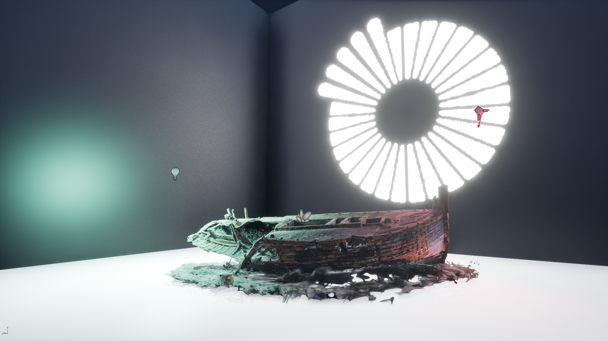
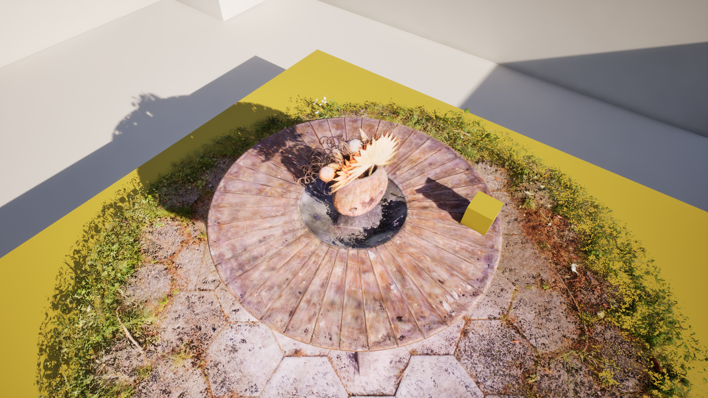
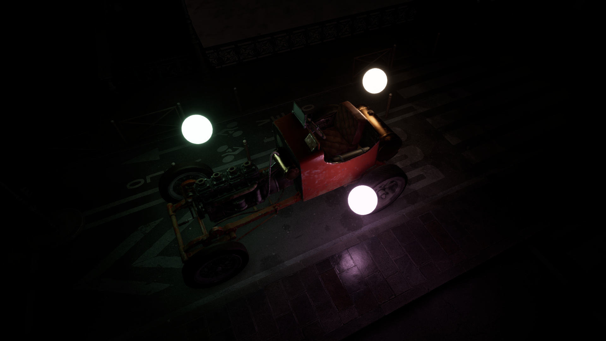
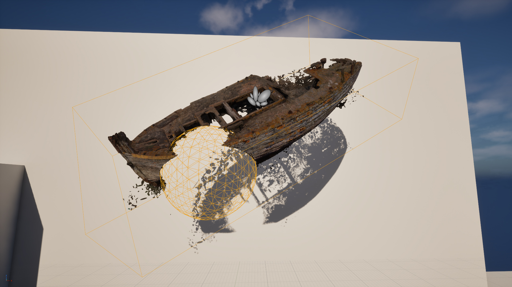

StarLightGS
What is StarLightGS?
StarLightGS is an open-source Unreal Engine 5 plugin for 3D Gaussian Splat rendering, featuring support for:
- Real-time relighting, with all engine light types.
- Native splat shadow casting (no proxy meshes required) from all engine light types.
- Work with meshes and splats. Splats will both cast and receive shadows from meshes and other splats.
- Millions of splats per scene, with high-performance splat rendering.
- Lumen support: splats will receive Lumen global illumination.
- Substrate support: relighting works with both Substrate enabled and with the legacy material pipeline.
- In-editor tooling: Use clipping volumes to crop your splat assets.
- Straightforward asset pipeline: Import and export PLY files, drag-and-drop splats into your scene.
- De-lighting during training to remove the lighting conditions present at time of capture.
- Surface normal and material property estimation to create PBR compatible splats.
- Work with datasets in COLMAP format, for compatibility with other calibration and alignment tools.
- Simple setup instructions for running on both Windows and Linux.

Splats can be re-lit with all engine light types.

Splats cast shadows without proxy meshes. Splats can both cast and receive shadows on both meshes and other splats.

Splats receiving Lumen global illumination and reflections from emissive materials.
